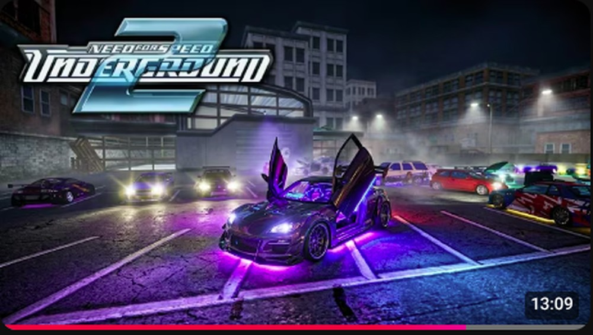

Underground 2 Revived: como jogar Need for Speed Underground 2 pelo navegador
Need for Speed · 25 de novembro de 2026 · Atualizado em 25 de novembro de 2026

O Underground 2 Revived é um projeto de fãs que permite jogar Need for Speed: Underground 2 diretamente em navegadores compatíveis, como Chrome e Firefox. A proposta é preservar a experiência de Bayview e acrescentar recursos online, sem exigir que o jogador instale o jogo da forma tradicional.
O projeto recompila o código x86 do jogo para C e depois para WebAssembly. A camada gráfica usa WebGPU e o áudio usa Web Audio. Segundo a página oficial, a experiência oferece tela widescreen, taxa de até 120 quadros por segundo, exploração livre, corridas online, suporte a controles, volantes e comandos por toque.
Entre os recursos disponíveis estão modo online, free roam com outros jogadores, crews, salvamentos na nuvem, suporte a controles e opções gráficas. A página também informa que as músicas originais EA Trax não vêm incluídas. O jogador pode adicionar sua própria música.
Uma observação importante: o site informa que é necessário fornecer uma cópia própria do jogo. O projeto não é afiliado nem endossado pela Electronic Arts. Portanto, não é correto apresentá-lo como um relançamento oficial da EA.
O desenvolvimento também mudou de formato. O repositório público foi arquivado em 9 de novembro de 2026 e as atualizações passaram a continuar de forma privada. Isso não significa que o jogo tenha sido desligado: o site nfsu2.xyz continua funcionando e recebendo atualizações, segundo a documentação pública do projeto.
Para quem acompanha o canal Caio Mendonça, o Revived abre espaço para vídeos de desempenho, configurações para PCs modestos, multiplayer, comparação com a versão original e novidades da comunidade. Você pode experimentar o projeto diretamente no site oficial.
Fontes e referências
Underground 2 Revived (site oficial); repositório e documentação do projeto; Is It Ported: arquivamento do código público.
Transparência editorial: informações oficiais, relatos jornalísticos, vazamentos e rumores são identificados separadamente. Alegações não confirmadas não devem ser tratadas como fatos.